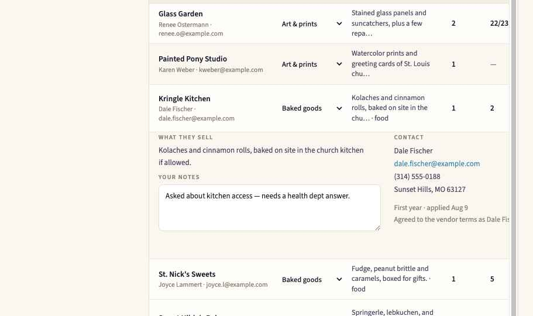
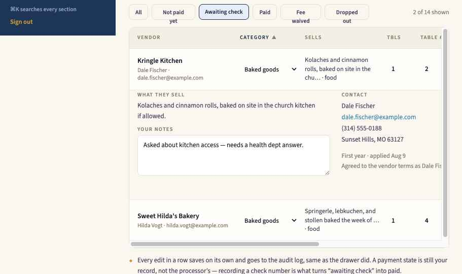
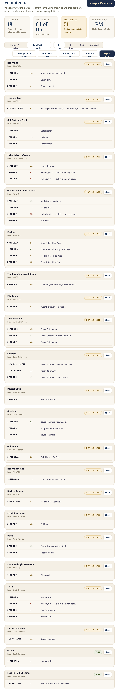
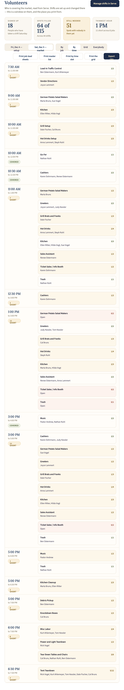
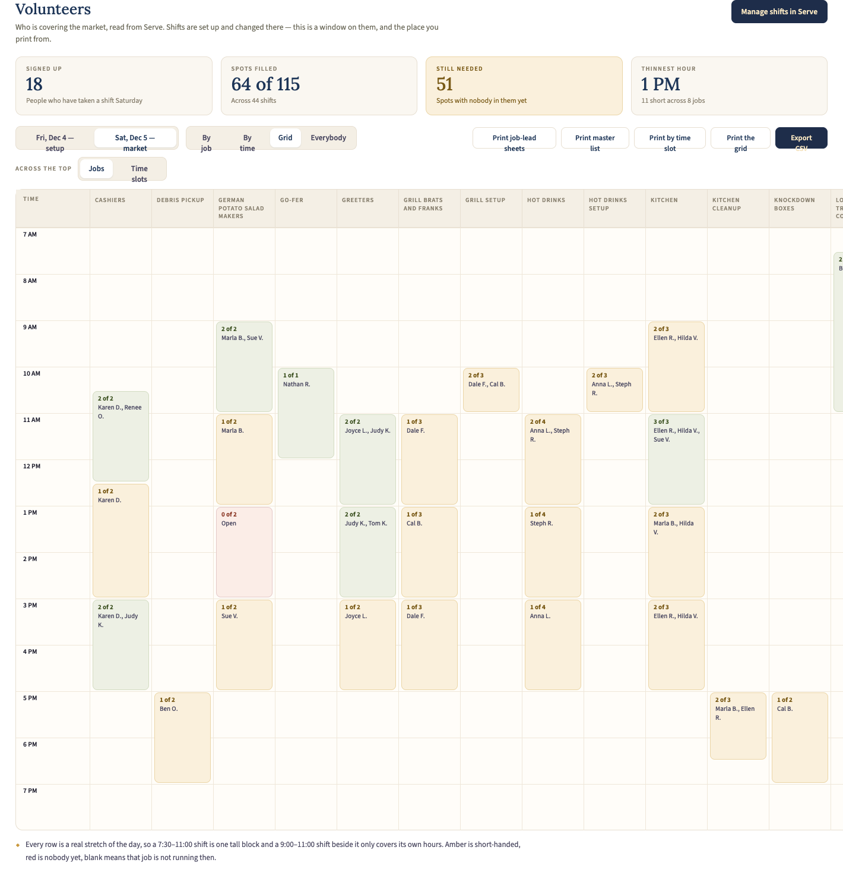
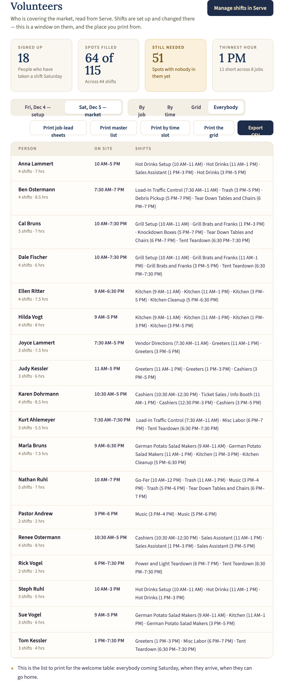
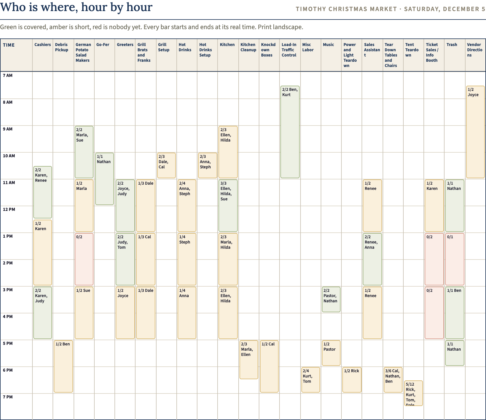
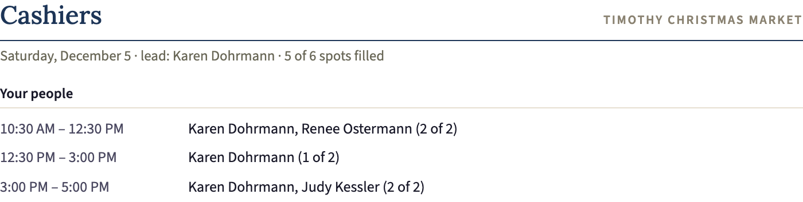
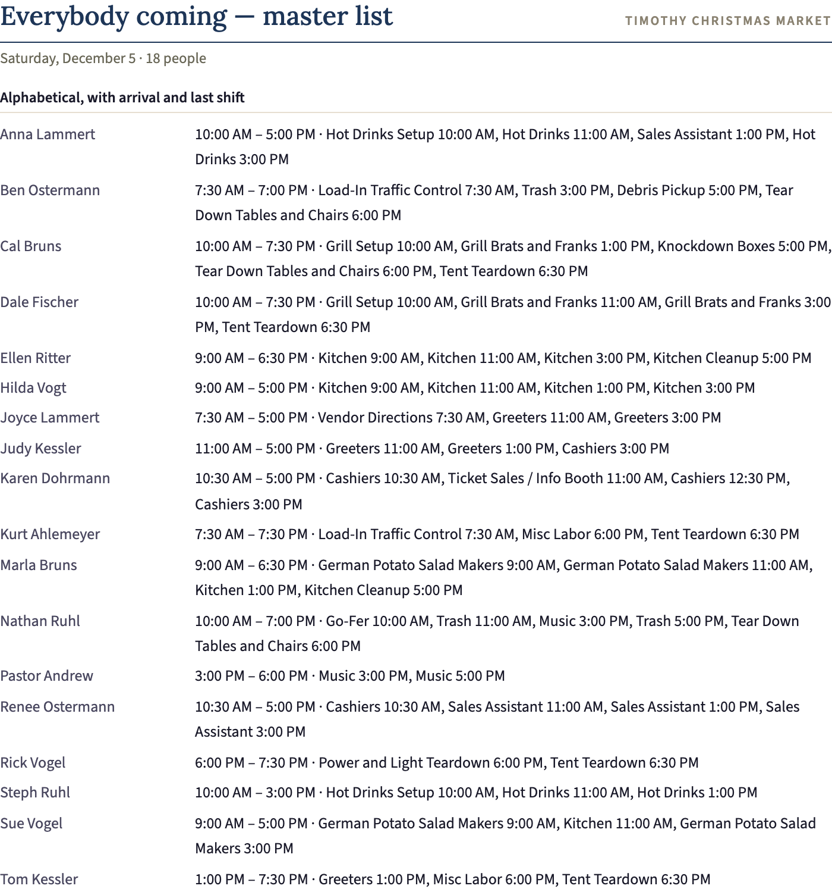

Two tabs of /market change. The vendor list stops sending the coordinator to a drawer for every edit and learns to sort and to track a check; the volunteer tab stops being one long read-only list and becomes four views of the same roster, all of them printable.
Prototype: Market Admin.dc.html · source read from admin/market.js, admin/ui.js, admin/helpers.js, admin/sections.js · shift data from the Serve screenshots for Fri Dec 4 / Sat Dec 5.
Every change — a table number, a payment state — meant opening the drawer, saving, and landing back at the top of the list. Nothing could be sorted. A vendor paying by check had nowhere to record that the check arrived, so “awaiting check” and “never paid” looked identical.
One panel per role, and nothing else. A job lead could not be handed their own people for the day, and there was no way to see who is on site at 1 PM, or who is coming at all — which is what the welcome table and the kitchen actually need.
Category, tables, table number, payment state, check number and check date are all edited in place. Each cell saves on its own and writes to the audit log exactly as /market/update does today. The chevron opens the rest of the application underneath the row — what they sell, contact details, amount paid, staff notes — so the drawer is gone entirely.

Sorted by category; the third row is expanded in place instead of opening a drawer. The table scrolls horizontally below about 1130px, so nothing is hidden.

The Awaiting check filter — the two vendors who said they would send a check and have not.
The tab stays a read-only window on Serve. What changes is that the same roster can be looked at four ways, and each way prints. A day switch sits above them — Friday setup and Saturday market are different days with different crews.
A panel per job, most short-handed first, with the lead named and a Sheet button that prints that lead’s page alone.

Slot by slot down the day, every job running in that slot side by side, with a “short” count per slot.

The axis toggle decides what runs across the top. Rows and columns are whole hours; a shift is one block that starts and ends at its real minute, so a 7:30–11:00 shift covers three and a half hours and a 9:00–11:00 job beside it covers two. Green is covered, amber short, red nobody yet.

Jobs across the top, hours down the side. Twenty-two Saturday jobs, so it scrolls sideways. Flipping the toggle to Time slots turns this on its side — jobs down the left, hours across — which is the orientation the printed sheet below uses; see it whole there.
Alphabetical: each person, when they arrive, when they can go home, total hours, and every shift they hold. This is the welcome-table list.

Four print buttons, each opening a preview of exactly what comes out: job-lead sheets (one page each), master list, by time slot, and the grid — which prints in whichever orientation is on screen, with the same hour blocks.

The whole Saturday on one landscape sheet.

One page per lead — their shifts, their people.

Everybody coming, with arrival and last shift.
A button on the Volunteers tab writes one row per person per shift across both days, plus a row for every unfilled spot marked (open). Columns: Day, Date, Job, Job lead, Start, End, Hours, Person, Spots filled, Spots needed, Status. Cells starting = + - @ are escaped the same way the vendor CSV already does it, so the file is safe to hand to anybody with a spreadsheet.